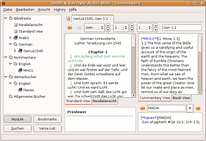
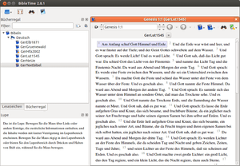

Sword
Archivierte Anleitung
Dieser Artikel wurde archiviert, da er - oder Teile daraus - nur noch unter einer älteren Ubuntu-Version nutzbar ist. Diese Anleitung wird vom Wiki-Team weder auf Richtigkeit überprüft noch anderweitig gepflegt. Zusätzlich wurde der Artikel für weitere Änderungen gesperrt.
Anmerkung: Der Nachfolger von GnomeSword ist das Programm Xiphos.
Zum Verständnis dieses Artikels sind folgende Seiten hilfreich:
Sword  ist ein Projekt der CrossWire Bibel-Gesellschaft. Sein Zweck ist es, ein plattformübergreifendes quellenoffenes Projekt, geschützt durch die GNU Lizenz, herzustellen. Sie soll Programmierern und Bibelgesellschaften erlauben, neue Bibel-Software schneller und leicht zu schreiben. Das SP stellt dazu Bibliotheken von über 200 Texten, darunter Bibeln, Kommentare, Lexika und Bücher, in 50 Sprachen zur Verfügung, die von verschiedenen Bibelprogrammen genutzt werden können (aus Wikipedia
ist ein Projekt der CrossWire Bibel-Gesellschaft. Sein Zweck ist es, ein plattformübergreifendes quellenoffenes Projekt, geschützt durch die GNU Lizenz, herzustellen. Sie soll Programmierern und Bibelgesellschaften erlauben, neue Bibel-Software schneller und leicht zu schreiben. Das SP stellt dazu Bibliotheken von über 200 Texten, darunter Bibeln, Kommentare, Lexika und Bücher, in 50 Sprachen zur Verfügung, die von verschiedenen Bibelprogrammen genutzt werden können (aus Wikipedia  - die freie Enzyklopädie).
- die freie Enzyklopädie).
Für Sword gibt es in den Ubuntu-Quellen diverse Pakete, die aber nicht einzeln installiert werden müssen, da sie automatisch mit den jeweiligen grafischen Oberfläche (siehe unten) installiert werden.
Installation¶
Für GNOME und KDE gibt es grafische Oberflächen, die das einfache und komfortable Studium von verschiedenen Bibel-Übersetzungen, Lexika und Kommentaren ermöglichen. Für GNOME ist dies GnomeSword und für KDE Bibletime .
|  |
| GnomeSword |
GnomeSword¶
GnomeSword kann aus den Paketquellen über die Pakete
gnomesword (universe)
sword-language-pack-de (universe)
 mit apturl
mit apturl
Paketliste zum Kopieren:
sudo apt-get install gnomesword sword-language-pack-de
sudo aptitude install gnomesword sword-language-pack-de
installiert [1] werden. Nach der Installation kann man GnomeSword aus dem GNOME-Menü heraus über
"Anwendungen -> Bildung -> Xiphos Bibelleitfaden"
starten.
|  |
| Bibletime |
Bibletime¶
Bibletime kann ebenfalls aus der Paketverwaltung heraus installiert [1] werden. Die benötigten Pakete sind diesesmal
bibletime (universe)
mit apturl
Paketliste zum Kopieren:
sudo apt-get install bibletime
sudo aptitude install bibletime
Nach der Installation kann man BibleTime unter Gnome aus dem Menü heraus über
"Anwendungen -> Bildung -> BibleTime"
starten.
Module¶
Module sind zu finden unter Module im RAW Zip Format. Eine Zipdatei besteht aus zwei Ordnern: mods.d und modules. Der Inhalt sollte entsprechend der Ordnerkonvention nach /usr/share/sword/ extrahiert werden. Dies geschieht mit folgenden Befehlen im Terminal [2]:
cd /usr/share/sword/ sudo unzip ~/modul.zip
Wie Module erzeugt werden steht hier .
Hinweis:
Wenn man eine zip Datei im Homeverzeichnis entpackt und die entsprechenden Dateien nur nach /usr/share/sword/ kopiert und die entpackten Dateien im Homeverzeichnis belässt, dann wird nur das im Homverzeichnis befindliche Modul geladen, obwohl unter /etc/sword.conf als Pfad /usr/share/sword/ steht.
Hinweis:
Wer gerne den Bibeltext der "Hoffnung für Alle" installieren möchte, kann das zwar mit der beschrieben Methode durchführen, muss aber danach die Bibeltexte freischalten. Erkennen kann man dies zum einen an dem "Schloss"-Symbol und zum anderen, wenn man mit der rechten Maustaste auf das Buch klickt. Hier noch der link zum freischalten: Hoffnung für Alle - Sword-Modul .
- Erstellt mit Inyoka
-
 2004 – 2017 ubuntuusers.de • Einige Rechte vorbehalten
2004 – 2017 ubuntuusers.de • Einige Rechte vorbehalten
Lizenz • Kontakt • Datenschutz • Impressum • Serverstatus -
Serverhousing gespendet von